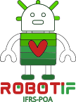

IFRS-POA · MPIE · 2026
Esta oficina faz parte de uma pesquisa do Mestrado Profissional em Informática na Educação (MPIE) do Instituto Federal do Rio Grande do Sul — Campus Porto Alegre, e será realizada com os alunos da Escola Estadual de Ensino Médio para Surdos Professora Lilia Mazeron.
Ao longo dos encontros, exploraremos conceitos de robótica e programação utilizando o Micro:bit, uma plataforma acessível e interativa que permite criar projetos físicos e digitais de forma integrada.
O objetivo é investigar como atividades hands-on com robótica podem contribuir para o aprendizado de lógica de programação, estimulando a criatividade e o pensamento computacional dos participantes.
Pesquisador
Pesquisador / Facilitador
Instrutor da Oficina
Pesquisadora
Apresentar aos participantes a ferramenta Scratch, uma plataforma de programação visual desenvolvida pelo MIT que utiliza blocos de encaixar. Os participantes aprenderão sobre a interface do Scratch, o palco (stage), os atores (sprites), os cenários (backdrops) e os blocos de comandos.
Acesse o site oficial para começar a explorar: scratch.mit.edu.
Atividade prática onde os participantes irão desenvolver um jogo no Scratch. Eles aprenderão a mover atores na tela, a criar interações simples e a aplicar conceitos de lógica de programação (como condições e repetições) de forma lúdica.
Usar o QR Code ao lado ou o link abaixo para responder à pesquisa sobre a oficina.
Acessar Pesquisa da OficinaApresentar aos participantes os membros da equipe envolvidos na oficina: Richard (instrutor), Silvia, Mario e Alexandre (facilitadores e pesquisadores).
Aplicar o formulário da Pré-oficina, que contém perguntas sobre os conhecimentos prévios dos participantes.
Os participantes devem responder de acordo com a seguinte escala:
Usar o QR Code impresso ou o link abaixo para que os participantes possam acessar e responder o formulário.
Acessar Formulário Pré-oficinaO BBC micro:bit é um computador de bolso programável criado para tornar o aprendizado de programação e eletrônica acessível e divertido. Ele possui sensores de temperatura, luz e movimento, botões físicos, uma matriz de 25 LEDs, Bluetooth e conectores para componentes externos — tudo em uma placa do tamanho de um cartão de crédito. Pode ser programado de forma visual (blocos) ou em Python e JavaScript diretamente no navegador, sem instalar nada. Saiba mais no site oficial: makecode.microbit.org.
Momento de reflexão coletiva com os alunos: o que aprenderam, quais foram suas dificuldades e o que pode ser melhorado nos próximos encontros.
Usar o QR Code impresso ou o link abaixo para que os participantes possam acessar e responder o formulário Pós-oficina.
Acessar Formulário Pós-oficina